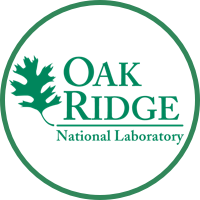
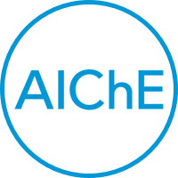

Gavin M. Wiggins
Currently developing computational models (written in Matlab and Python) at ORNL to simulate the fast pyrolysis of biomass particles in fluidized-bed reactors. This research will improve the understanding of bubbling fluidized-bed and circulating fluidized-bed reactors for production of bio-oil which can be refined into transportation fuels and high commodity chemicals. I also enjoy developing apps for the Mac and iPhone, playing disc golf, attending concerts, and an occasional hike or camping trip in the mountains of Tennessee and North Carolina.


Research
Oak Ridge National Laboratory (ORNL)
Conducting fast pyrolysis research of biomass particles in a bubbling fluidized bed reactor. Computational modeling of reactions in the system will provide insights on how to improve the conversion of woody biomass to a liquid bio-fuel. May 2013 to present.
Clemson University
Designed a custom buoy and terrestrial enclosure to remotely monitor environmental conditions as required for the Intelligent River Project. August 2012 to July 2013.
Clemson Engineering Technologies Laboratory (CETL)
Conducted research for the Savannah River National Lab for an argon environment electrical study using a custom designed glovebox and hydraulic dynamometer. Tested industrial electric motors in different gaseous environments under loaded and unloaded conditions to trace potential arcing issues. Voltage, current, and motor load were monitored and controlled using data acquisition equipment, various sensors and valves, and LabView software integration. May 2007 to May 2011.
Oak Ridge National Laboratory (ORNL)
Conducted research for the Oak Ridge National Lab for a future biomass gasification steam facility. Modeled biomass gasification and system process flows to optimize operation of the facility and to determine air emissions from the combustion of various biomass fuels. Summer 2010.
Master's Research
Conducted research on biomass fuels in a custom designed furnace that replicated a small scale traveling-grate coal boiler. Compared air emissions and heat output of biomass briquettes to coal using an emissions analyzer, thermocouples, and a custom data acquisition system. Performed a biomass feasibility study of Clemson University’s Experimental Forest based on the coal feed rate requirements of the campus boiler system. 2006 to 2011.
Programming
Mac and iPhone ~ Objective-C, Swift
Self-taught Objective-C (and now Swift) programming from various books, tutorials, and conversations with other developers. December 2011 to present.
WeathrClip is a menu bar weather application that provides current conditions, forecast data, hourly data, and an animated radar view of the current location or a user defined location. Available for the Mac and iPhone.
Un1ts is a comprehensive unit converter that converts as you type. Place your favorite units in the toolbar for easy access. Available for the Mac.
Scientific Computations ~ Python, Matlab
Frustrated with Matlab licensing issues and hefty toolbox fees, I switched to Python for all of my scientific research and data analysis. As a general programming language, Python's capabilities are considerably more useful than Matlab's scripting environment. September 2013 to present.
Web Design ~ HTML, CSS, Javascript, WordPress
I have a general knowledge of website development and blogging tools; however, I prefer developing and designing stand-alone applications using Swift or Python. May 2011 to present.

Organizations
Knoxville CocoaHeads
Organizer of the CocoaHeads chapter for Knoxville, TN. The group is devoted to discussion of Apple's Cocoa and Cocoa Touch Frameworks for programming on OS X (Mac) and iOS (iPhone, iPad). Meetings are held every 2nd Thursday of the month.
American Society of Mechanical Engineers (ASME)
I am an active member of the local East Tennessee ASME chapter. Founded in 1880 as the American Society of Mechanical Engineers, ASME is a not-for-profit professional organization that enables collaboration, knowledge sharing and skill development across all engineering disciplines, while promoting the vital role of the engineer in society.
American Institute of Chemical Engineers (AIChE)
I am also a member of AIChE. It is the world's leading organization for chemical engineering professionals, with over 45,000 members from over 100 countries.
Education
CSWA exam
Certified SolidWorks Associate exam October 2012
FE exam
Fundamentals of Engineering exam April 2012
Clemson University
M.S. in Environmental Engineering & Earth Science May 2011
M.S. in Mechanical Engineering December 2010
B.S. in Mechanical Engineering May 2005
Minor in Mathematical Sciences May 2005